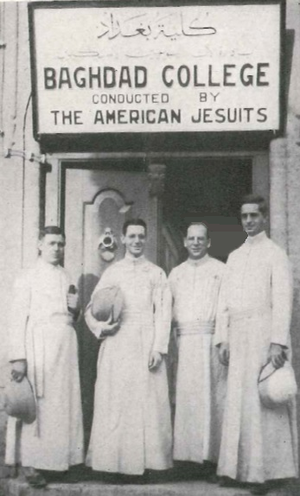

Our Story
Baghdad College was founded in 1932 by William A. Rice, S.J. at the request of Pope Pius XI to establish a Catholic school in Baghdad. The school originally had four Jesuit teachers and 107 students with the motto "An Iraqi School for Iraqi Boys". The school was initially located in ten buildings, located at 11/45 Murabba'ah Street in Baghdad, on the east bank of the Tigris River, on 4 acres of land in the northern part of the city. Father Leo Guay designed the campus buildings, using Iraqi architecture as an influence. Courses were conducted in English. National Public Radio stated that at the time it was Baghdad's "premier high school." Soon after its founding, the teaching staff included 33 Jesuits and 31 Iraqi teachers. Some of the Jesuits were fluent in the Arabic language, and others had established Arabic classes to try to teach themselves the language. The student body became over 1,100. Most of the students were children of the Iraqi elite. Historically, about 20% of the students received scholarships. About half of the students were Muslims and half were Christians. Jews were also students. Baghdad College's pupils included Iraqis, Armenians, Egyptians, Iranians, Palestinians, and Syrians.

 :
: